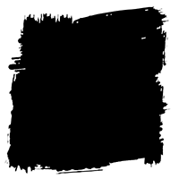
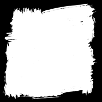

clip: rect()C1
.Mask {
position: absolute;
clip: rect(30px, 170px, 170px, 30px);
}
Note: Property deprecated
Test cases on HTML/SVG content
All code blocks are real-time editable. Prefixes are required for some test cases, but are automatically added by Autoprefixer for convenience.
In the page: Clipping Masking Notes
Clipping in CSS can be compared to Photoshop “Vector Masks”. So only vector shapes.

clip: rect()C1
.Mask {
position: absolute;
clip: rect(30px, 170px, 170px, 30px);
}
Note: Property deprecated
clip-path: inset()C2
.Mask {
clip-path: inset(30px 30px);
//clip-path: inset(30px 20px 50px 0);
}
clip-path: circle()C3
.Mask {
clip-path: circle(75px at center);
//clip-path: circle(closest-side at 50px 50px);
}
clip-path: polygon()C4
.Mask {
clip-path: polygon(50% 0%, 80% 100%, 0 40%, 100% 40%, 20% 100%);
//clip-path: polygon(evenodd, 50% 0%, 80% 100%, 0 40%, 100% 40%, 20% 100%);
}
clip-path: url()C5Referencing inline SVG <clipPath>
<clipPath id="clipPath" clipPathUnits="objectBoundingBox">
<polygon points=".5,0 .8,1 0,.4 1,.4 .2,1" />
</clipPath>
.Mask {
clip-path: url(#clipPath);
}
polygon {
clip-rule: nonzero;
//clip-rule: evenodd;
}
clip-path: url()C6Referencing inline SVG <clipPath> as data:image
.Mask {
clip-path: url('data:image/svg+xml;utf8,%3Csvg xmlns="http://www.w3.org/2000/svg"%3E%3Cdefs%3E%3CclipPath id="clipPath" clipPathUnits="objectBoundingBox"%3E%3Cpolygon points=".5,0 .8,1 0,.4 1,.4 .2,1" /%3E%3C/clipPath%3E%3C/defs%3E%3C/svg%3E#clipPath');
}
clip-path on SVG contentC8
.Mask {
clip-path: polygon(50% 0%, 80% 100%, 0 40%, 100% 40%, 20% 100%);
}
<clipPath> on SVG contentC9
<clipPath id="clipPathSVG" clipPathUnits="objectBoundingBox">
<polygon points=".5,0 .8,1 0,.4 1,.4 .2,1" />
</clipPath>
.Mask {
clip-path: url(#clipPathSVG);
}
Note: The SVG part is not editable due to an Edge bug.
Masking in CSS can be compared to Photoshop masks, as follow:
Here are masks images used on some test cases below: alpha-mask.png and luminance-mask.png

mask-image: linear-gradient()M1Using (default) alpha mask
.Mask {
mask-image: linear-gradient(black 25%, transparent 50%);
}
mask-image: linear-gradient()M2Forcing luminance mask
.Mask {
mask-image: linear-gradient(white 25%, black 50%);
mask-mode: luminance;
/* old WebKit */
//mask-source-type: luminance;
}
Note: If you uncomment mask-source-type, this works in Chrome, but has weird impact on next content.
mask-image: url()M4Forcing luminance mask
.Mask {
mask-image: url(luminance-mask.png);
mask-mode: luminance;
/* old WebKit */
//mask-source-type: luminance;
}
Note: If you uncomment mask-source-type, this works in Chrome, but has weird impact on next content.
mask-*M5Like all background-* properties
.Mask {
mask-image: url(alpha-mask.png);
mask-size: 50%;
mask-repeat: round;
}
mask-image: url()M6Referencing inline SVG <mask>, using (default) luminance mask
<mask id="mask" maskContentUnits="objectBoundingBox">
<rect width="1" height="1" fill="url(#gradient)"/>
<linearGradient x2="0" y2="1" id="gradient">
<stop offset="25%" stop-color="white" />
<stop offset="50%" stop-color="black" />
</linearGradient>
</mask>
.Mask {
mask-image: url(#mask);
}
mask-image: url()M7Referencing inline SVG <mask>, forcing alpha mask
<mask id="maskMaskSource" class="MaskType" maskContentUnits="objectBoundingBox">
<rect width="1" height="1" fill="url(#gradientMaskSource)"/>
<linearGradient x2="0" y2="1" id="gradientMaskSource">
<stop offset="25%" stop-color="black" />
<stop offset="50%" stop-color="transparent" />
</linearGradient>
</mask>
.Mask {
mask-image: url(#maskMaskSource);
}
.MaskType {
mask-type: alpha;
}
mask-image: url()M8Referencing inline SVG <mask> as data:image
.Mask {
mask-image: url('data:image/svg+xml;utf-8,%3Csvg xmlns="http://www.w3.org/2000/svg"%3E%3Cdefs%3E%3Cmask id="mask" maskContentUnits="objectBoundingBox"%3E%3Crect width="1" height="1" fill="url(%23gradient)"/%3E%3ClinearGradient x2="0" y2="1" id="gradient"%3E%3Cstop offset="25%" stop-color="white" /%3E%3Cstop offset="50%" stop-color="black" /%3E%3C/linearGradient%3E%3C/mask%3E%3C/defs%3E%3C/svg%3E#mask');
}
mask on SVG contentM10
.Mask {
mask-image: linear-gradient(black 25%, transparent 75%);
}
<mask> on SVG contentM11
<mask id="maskSVG" maskContentUnits="objectBoundingBox">
<rect width="1" height="1" fill="url(#gradientSVG)" />
<linearGradient x2="0" y2="1" id="gradientSVG">
<stop offset="25%" stop-color="white" />
<stop offset="50%" stop-color="black" />
</linearGradient>
</mask>
.Mask {
mask: url(#maskSVG);
}
Note: The mask-image property doesn’t seem to work on WebKit based browsers. Use mask instead. Also the SVG part is not editable due to an Edge bug.
Firefox (53) supports all test cases in this page. So Hooray!
Chrome supports many test cases, except C6, C7, M6, M7, M8, M9, M10. Tests M2, M4 are almost supported but have weird impact on other tests.
Opera works as Chrome. Except tests M2, M4 that fail.
Safari works mostly as Chrome. Except some weird bugs when using more than one clip-path per page. See this WebKit bug
Edge has no support at all. :/ Supports only C9, M11 (SVG masks on SVG content). Vote for more!
CanIUse pages: CSS Clip-path CSS Masks